Before making a quantitative analysis of the Fourier series of the classical waveforms, we pause to make two useful observations about symmetries in waveforms and the corresponding symmetries in the Fourier series. First, a Fourier series might consist only of even or odd-numbered harmonics; this is reflected in symmetries comparing a waveform to its displacement by half a cycle. Second, the Fourier series may contain only real-valued or pure imaginary-valued coefficients (corresponding to the cosine or sine functions). This is reflected in symmetries comparing the waveform to its reversal in time.
In this section we will assume that our waveform has an integer period  , and
furthermore, for simplicity, that
, and
furthermore, for simplicity, that  is even (if it isn't we can just
up-sample by a factor of two). We know from Chapter 9 that any (real or
complex valued) waveform
is even (if it isn't we can just
up-sample by a factor of two). We know from Chapter 9 that any (real or
complex valued) waveform  can be written as a Fourier series (whose
coefficients we'll denote by
can be written as a Fourier series (whose
coefficients we'll denote by  ):
):
To analyze the first symmetry we delay the signal  by a half-cycle. Since
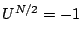 we get:
by a half-cycle. Since
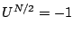 we get:
Furthermore, if  happens to be equal to itself shifted a half cycle, that
is, if
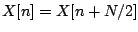, then (looking at the definitions of and )
we get 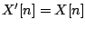 and 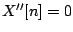. This implies that, in this case,
happens to be equal to itself shifted a half cycle, that
is, if
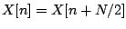, then (looking at the definitions of and )
we get 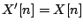 and 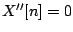. This implies that, in this case,
 has only even numbered harmonics. Indeed, this should be no surprise,
since in this case
has only even numbered harmonics. Indeed, this should be no surprise,
since in this case  would have to repeat every 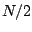 samples, so its
fundamental frequency is twice as high as normal for period
would have to repeat every 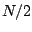 samples, so its
fundamental frequency is twice as high as normal for period  .
.
In the same way, if
 ], then
], then  can have only odd-numbered
harmonics. This allows us easily to split any desired waveform into its
even- and odd-numbered harmonics. (This is equivalent to using a comb filter
to extract even or odd harmonics; see Chapter 7.)
can have only odd-numbered
harmonics. This allows us easily to split any desired waveform into its
even- and odd-numbered harmonics. (This is equivalent to using a comb filter
to extract even or odd harmonics; see Chapter 7.)
To derive the second symmetry relation we compare  with its time
reversal, 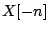 (or, equivalently, since
with its time
reversal, 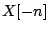 (or, equivalently, since  repeats every
repeats every  samples, with
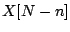). The Fourier series becomes:
samples, with
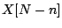). The Fourier series becomes:
So if  satisfies 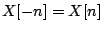 the Fourier series consists of cosine
terms only; if 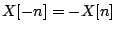 it consists of sine terms only; and as
before we can decompose any
satisfies 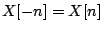 the Fourier series consists of cosine
terms only; if 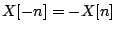 it consists of sine terms only; and as
before we can decompose any  (that repeats every
(that repeats every  samples) as a sum
of the two.
samples) as a sum
of the two.